PBX y telefonía¶
Qué es¶
Este artículo cubre los objetos base de la central telefónica: cómo se conectan los teléfonos (extensiones), cómo el sistema se conecta al exterior (troncales), cómo se identifican las llamadas entrantes (DID), cómo se enrutan (rutas), y cómo se agrupan los agentes para recibirlas (grupos de timbrado y colas).
Para IVR ver PBX — IVR (menú de voz). Para conferencias, listas blanca/negra, horarios, plantillas y demás funciones de soporte, ver PBX — Funciones avanzadas.
Cómo se usa¶
Extensiones (gestión de dispositivos)¶
Cada teléfono o softphone que se conecta al sistema es una extensión. Tipos soportados: SIP, IAX2, MGCP, DAHDI (línea física) y extensión externa (un número de teléfono normal usado como si fuera una extensión — solo puede recibir llamadas del sistema, no puede originarlas).
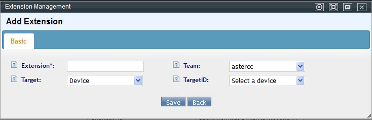
| Campo | Obligatorio | Qué define |
|---|---|---|
| Nombre de la extensión | Sí | Nombre libre para identificarla |
| Número interno | Sí | Número de marcación interna — único dentro del equipo |
| Cuenta de registro | Autogenerada | Formato equipo-interno (ej. astercc-5000) — es el usuario del softphone |
| Contraseña de registro | Sí | Contraseña del dispositivo |
| Equipo | Sí | A qué equipo pertenece |
| Usuario | Sí | A qué cuenta de usuario pertenece (el número entre paréntesis junto al usuario muestra cuántas extensiones ya tiene) |
| Tipo de extensión | Sí | SIP / IAX2 / MGCP / DAHDI / externa |
| Estado | Sí | Si la extensión está habilitada |
| Plantilla | No | Aplica parámetros predefinidos para ajustar en lote extensiones similares |
| Permitir llamadas salientes | No | Si puede marcar fuera del sistema |
| Número/nombre que llama (interno) | No | Solo aplica a llamadas internas; requiere teléfono IP para mostrar el nombre |
| Tiempo de espera | No | Segundos antes de dar la llamada por fallida si no contesta |
| Número/nombre que llama (externo) | No | Solo aplica a llamadas salientes por troncal |
| No molestar | No | Activa/desactiva el modo no molestar de la extensión |
| Grabación | No | Si esta extensión graba sus llamadas |
| Buzón de voz | No | Activación, contraseña y correo de destino, tono de espera por defecto |
| Nombre de host | No | Si se define, solo se acepta registro desde esa dirección (solo extensiones de red) |
| Troncal de salida | No | Fuerza qué troncal usa esta extensión al llamar afuera |
| Alcance de captura de llamada | No | Grupo de cuentas (solo llamadas del mismo grupo) o equipo (todo el equipo) |
| Tono de retorno personalizado | No | Qué escucha quien llama mientras esta extensión timbra |
| Detalles de la extensión | No | Configuración personalizada adicional |
| Modo del agente | No | Fija/autoadaptable/autoseleccionable — ver FAQ |
| Dirección MAC | No | Para aprovisionamiento automático de teléfonos IP |
Al editar una extensión, se pueden configurar lista negra (números que no pueden llamarla) y lista blanca (solo esos números pueden llamarla) directamente desde ahí, o desde PBX — Funciones avanzadas. Tras guardar, aparece una barra de recarga — es necesaria para que el cambio tome efecto.
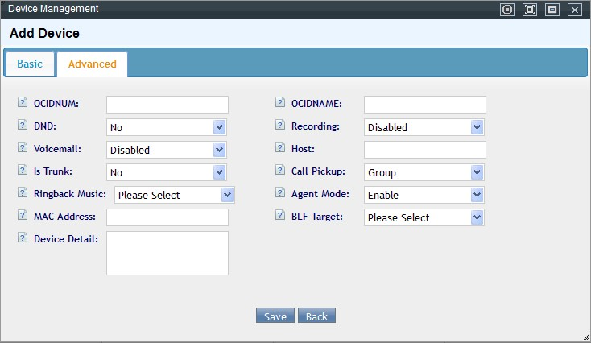
Cuatro lugares donde se controla la grabación
La grabación de llamadas se puede fijar en cuatro niveles, del más específico al más general: la propia extensión/dispositivo (campo "Grabación" de esta tabla), la cuenta ("grabación forzada" obliga a grabar todas las extensiones que dependen de ella — ver Call center inbound), el equipo, y el agente — las llamadas de agente se graban automáticamente sin necesidad de configurar nada extra (ver Grabación de llamadas). Un nivel más general (equipo/cuenta) sobrescribe el criterio individual de cada dispositivo que dependa de él.
Buzón de voz: solo puede recibir mensajes una extensión con "Estado de buzón de voz = disponible". Los mensajes quedan en el servidor en /var/spool/asterisk/voicemail/<equipo>/<extensión>/INBOX/, se pueden escuchar en línea, descargar o eliminar desde el listado. Si el equipo tiene configurado "método de envío de buzón = plantilla", cada mensaje nuevo también se reenvía por correo a la dirección configurada en la extensión.
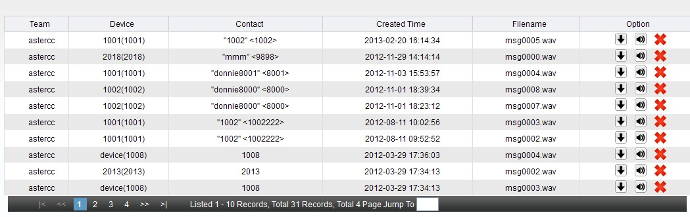
Números internos (números de interno)¶
Cualquier objeto llamable del sistema (extensión, cola, grupo de timbrado, IVR, sala de conferencia, tecla rápida) tiene un número interno para poder marcarlo desde otra extensión. Un mismo objeto puede tener más de un número interno. La pantalla de gestión de números internos centraliza el alta/edición de números para todos estos tipos de objeto en un solo lugar, además de poder editarse desde la pantalla propia de cada uno. Dos números internos no pueden coincidir dentro del mismo equipo.
Al eliminar un número desde esta pantalla: si el número fue creado directamente ahí, se borra en el acto; si pertenece a un objeto dado de alta en su propia pantalla (dispositivo, cola, IVR, etc.), el sistema redirige a esa pantalla para completar la eliminación ahí.
Troncales y grupos de troncales¶
Un troncal conecta el sistema con el exterior — vía troncal de red (SIP, IAX), troncal analógico (puerto FXO) o troncal digital (E1 PRI).
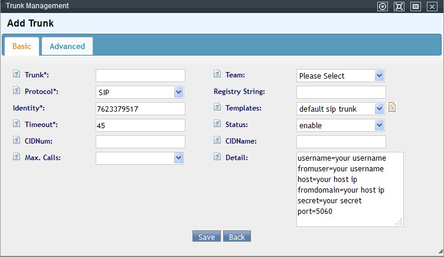
| Campo | Obligatorio | Qué define |
|---|---|---|
| Nombre del troncal | Sí | Identificación libre |
| Equipo | No | Si se define, solo ese equipo puede usarlo; si se deja vacío, todos los equipos pueden |
| Tipo | Sí | Protocolo de la línea |
| Cadena de registro | Condicional | Requerida en algunos troncales SIP/IAX para aceptar llamadas entrantes — formato usuario:contraseña@servidor:puerto |
| Identificador | Sí | Autogenerado; en algunos troncales de red debe coincidir con el usuario |
| Timeout | Sí | Tiempo máximo de intento de conexión antes de dar la llamada por fallida |
| Estado | Sí | Si el troncal está habilitado |
| Plantilla | No | Para gestionar en lote troncales del mismo tipo |
| Número/nombre que llama saliente | No | Solo algunos troncales soportan mostrar el nombre |
| Detalles | No | Parámetros de configuración del troncal |
| Deshabilitar tras fallos consecutivos | No | 0 deshabilita esta función; útil en grupos de troncales para marcar automáticamente uno como no disponible |
| Canales máximos soportados | No | Límite de llamadas simultáneas; sin límite por defecto |
| Forzar facturación por ruta | No | Exige que exista una tarifa de extensión coincidente para poder marcar por este troncal |
| Forzar número que llama saliente | No | Ignora cualquier otro número configurado (extensión, etc.) y usa siempre el del troncal |
| Cadena de marcado personalizada | No | — |
| Troncal en cascada / host en cascada | No | Para interconexión con otro sistema |
| Lista negra / blanca de número saliente | No | Restringe qué números pueden salir por este troncal |
Reglas del troncal: permiten, por objeto (número llamado, número que llama, nombre que llama), definir si se permite, deshabilita o prohíbe la llamada según coincidencia de prefijo y longitud, con opción de quitar/agregar prefijo antes de enviar.
Grupos de troncales: agrupan varios troncales bajo una estrategia de uso — secuencial (prioridad por orden en la lista), aleatoria, o rotativa — y soportan lista negra/blanca y reglas propias (con prioridad: prefijo de objeto > longitud de objeto > troncal > tipo de coincidencia; y dentro del tipo de coincidencia: prefijo llamado > región llamada > prefijo que llama > región que llama). Si un troncal falla, el sistema cambia automáticamente al siguiente del grupo según su error.
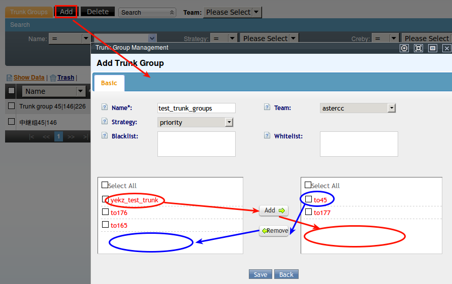
DID y grupos de DID¶
Un DID es el número que marca el cliente. Sirve para distinguir, por número, a qué ruta entrante (extensión, grupo de timbrado, IVR o cola) debe dirigirse la llamada.
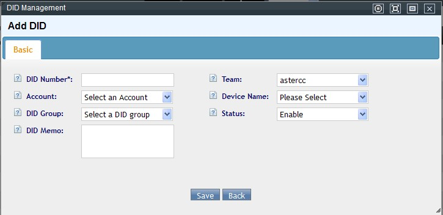
| Campo | Obligatorio | Qué define |
|---|---|---|
| Número de DID | Sí | El número en sí |
| Equipo | Sí | A qué equipo pertenece |
| Cuenta | No | Si se define, se listan solo extensiones de esa cuenta; asociar un DID a una cuenta ayuda a facturar por llamada entrante |
| Extensión | No | Si se define junto con la cuenta, la llamada rutea automáticamente a esa extensión sin necesitar una ruta entrante |
| Grupo de DID | No | Agrupa varios DID bajo una misma regla de enrutamiento reutilizable |
| Estado | Sí | Si el DID está habilitado |
| Notas | No | Descripción libre |
Grupos de DID: agrupan números por coincidencia exacta o coincidencia de prefijo, evitando repetir la misma regla de ruta entrante para cada número individualmente. Desde el grupo se puede ver el detalle de uso (qué rutas entrantes lo referencian) y listar todos los DID que contiene.
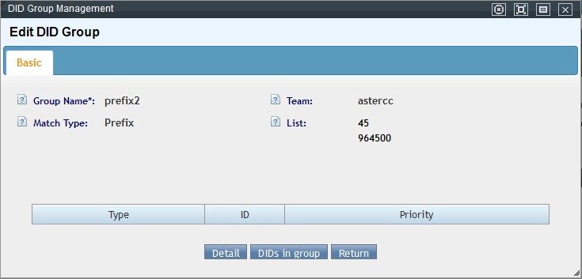
Rutas entrantes y salientes¶
Ruta entrante: enruta según coincidencia de DID (individual o por grupo), número que llama (CID), troncal, o combinaciones — con destino: coincidencia automática (marca hacia una extensión interna del sistema, o hacia afuera por troncal si no coincide ningún interno), grupo de timbrado, cola, IVR, dispositivo específico, buzón de voz, aplicación, sala de conferencia, dispositivo de fax, o directamente colgar (End). Cada ruta pertenece a un equipo, puede acotarse a un paquete de horario de trabajo (si se deja vacío, funciona siempre) y tiene prioridad configurable (mayor número = mayor prioridad).
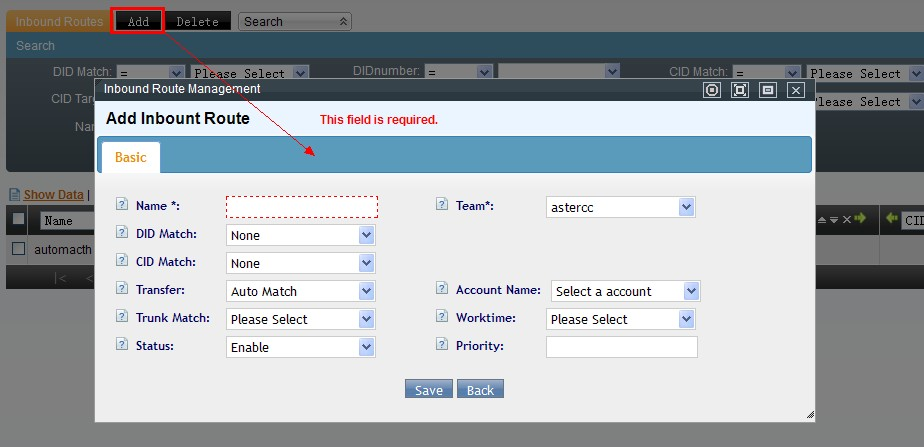
Tip
Si un DID ya tiene cuenta y extensión asignada directamente, la ruta entrante correspondiente por ese DID deja de aplicarse — el enrutamiento directo del DID tiene prioridad.
Ruta saliente: aplica sobre grupos de cuentas, decidiendo cómo tratar la llamada saliente según prefijo y longitud del número marcado (mejor coincidencia; si no coincide ninguno, se usa la regla "default") — destino: marcar directamente hacia afuera, grupo de timbrado, cola, IVR, o colgar (End) — con opción de quitar/agregar prefijo antes de enviar. Cada regla queda asociada a la ruta y se lista en una tabla editable dentro de esa misma ruta.
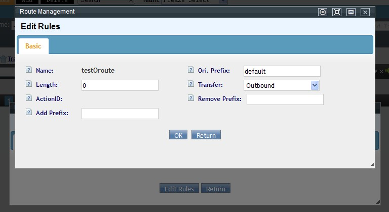
Grupos de timbrado¶
Trata a un conjunto de extensiones como un solo objeto llamable — se le llama a un número interno propio, y hace timbrar según su estrategia a las extensiones del grupo. A diferencia de una cola, no requiere check-in.
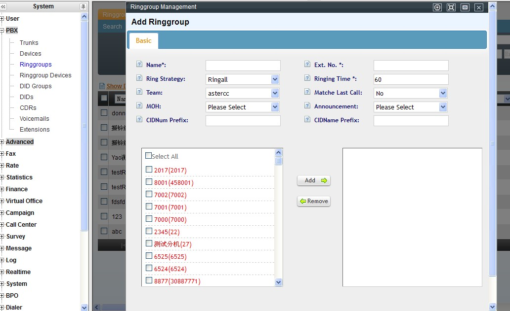
| Estrategia | Comportamiento |
|---|---|
| Timbrar a todas | Todas las extensiones del grupo timbran a la vez |
| Timbrado secuencial | Timbra una por una en orden |
| Timbrado rotativo | Alterna cuál extensión timbra primero en cada llamada nueva |
| Timbrado a libres | Solo timbran las extensiones libres |
| Timbrado incremental | Suma progresivamente extensiones a la vez que timbran (ej. 1, luego 1+2, luego 1+2+3) |
Otros campos: prioridad a quien tuvo la llamada más reciente, prefijo agregado al número/nombre que llama, voz de bienvenida, y tiempo total de timbrado.
Cada extensión dentro de un grupo de timbrado tiene su propia prioridad (0-9, mayor número = mayor prioridad; empates se ordenan por orden de alta) — relevante en las estrategias secuencial e incremental, y la pantalla de gestión muestra además cuántas llamadas recibió y contestó cada extensión dentro de ese grupo específico.
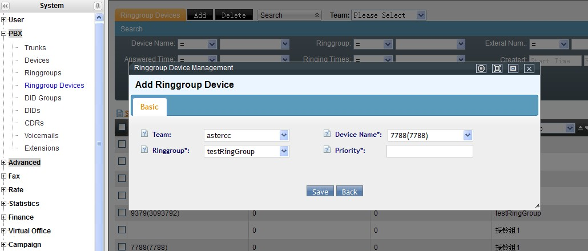
Colas¶
La cola es el corazón de la distribución de llamadas entrantes hacia grupos de agentes. Un grupo de agentes sin cola asociada no sirve de nada — al guardar un grupo sin cola, el sistema ofrece crear una automáticamente (relación uno a uno).
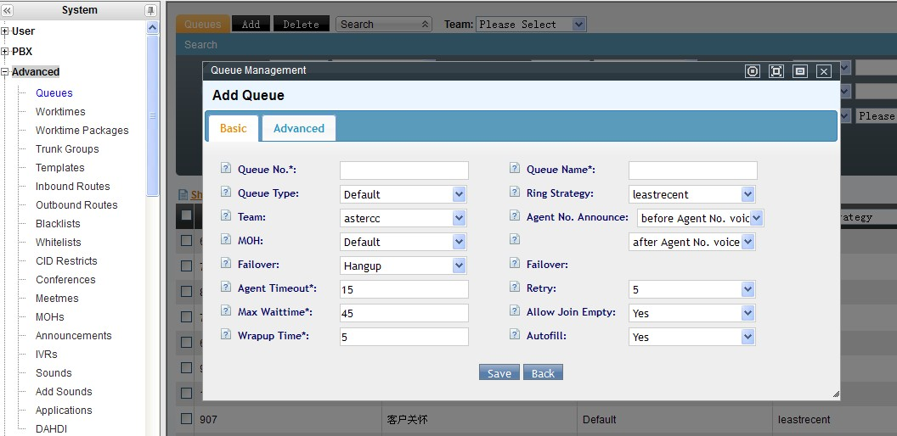
| Campo | Obligatorio | Qué define |
|---|---|---|
| Número de cola | Sí | Número interno de la cola dentro del equipo |
| Nombre de la cola | Sí | Descripción libre |
| Tipo de cola | Sí | Cola por defecto o cola AsterCC (normalmente se usa la primera) |
| Estrategia de timbrado | Sí | Más tiempo sin llamada, menos llamadas atendidas, aleatoria, rotativa por memoria, rotativa por configuración |
| Equipo | Sí | A qué equipo pertenece |
| Anuncio de número de agente | No | Antes o después del saludo |
| Música en espera | No | Personalizada, por defecto, o tono de retorno |
| Destino de fallo | No | Colgar, voz de entrada, IVR, otra cola, extensión, grupo de timbrado, buzón de voz, tono ocupado |
| Tiempo de espera del agente | No | Segundos que timbra antes de pasar al siguiente |
| Intervalo de reintento | No | Espera mínima antes de reofrecer al mismo agente |
| Tiempo máximo de espera | No | Tras el cual se aplica el destino de fallo |
| Permitir cola vacía | No | Si los clientes esperan aunque no haya agentes conectados |
| Timbrado con prioridad al último contacto | No | — |
| Intervalo entre timbrados | No | Espera entre un intento fallido y el siguiente agente |
| Autocompletado | No | Asigna varias llamadas en espera a varios agentes libres a la vez, o una por una en orden |
| Condición de entrada automática | No | Enruta según variables de sistema (ej. idioma elegido en un IVR previo) |
| Prefijo de nombre/número que llama | No | Se agrega al entrar a la cola |
| Multipartita | No | Si permite conferencia dentro de la cola |
| Anuncio de cola / de agente / de calificación | No | Voces reproducidas en cada momento del flujo |
| Tecla de función | No | Permite al cliente salir de la cola hacia buzón de voz o IVR con una tecla |
| Frecuencia y voz de anuncio periódico | No | Cada cuánto se repite un aviso mientras espera |
| Frecuencia de anuncio de posición | No | Cada cuánto se informa la posición en la fila |
| Máximo de clientes en espera | No | 0 = sin límite |
| Privilegio de agente | No | Si el agente puede iniciar una conferencia desde una llamada de esta cola |
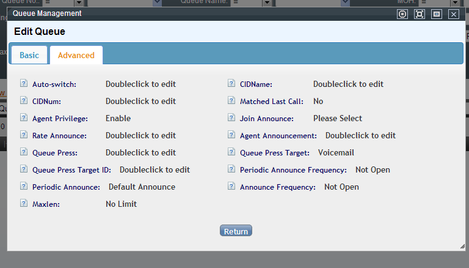
Tip
"Condición de entrada automática" también puede usarse desde el IVR: si un flujo define una variable global (ej. LANGUAGE=cn tras que el cliente elija idioma), y esa misma condición se configura en la cola, un destino de tipo "Otro IVR o cola automática" en el IVR puede enrutar dinámicamente a la cola cuya condición coincida, sin fijar la cola de destino de antemano.
Registro de llamadas (CDR) y retención de datos¶
Todas las llamadas del sistema (de negocio o directas entre extensiones) quedan en el registro de llamadas de PBX. Por volumen, el sistema divide los datos en varias tablas:
- Tabla del día: donde se registra la llamada en curso — no visible hasta ~1-2 minutos después de colgar (tiempo que toma generar el archivo de grabación) ni hasta que ambas partes cuelguen.
- Tabla actual: acumula los últimos N días (configurable en Sistema → Configuración → Procesamiento de grandes datos → Retención de tabla CDR actual, 90 días por defecto).
- Tablas mensuales: una por mes, con una retención configurable por separado (retención de tablas históricas, 6 meses por defecto) — al vencer, esos datos se eliminan definitivamente.
Cada registro permite escuchar o descargar la grabación asociada (si existe), y calcula por separado la duración (fin − inicio de la llamada) y la duración facturable (fin − momento de la respuesta) — esta última es la que usan las tarifas de sistema, equipo, agente y saliente para calcular el costo.
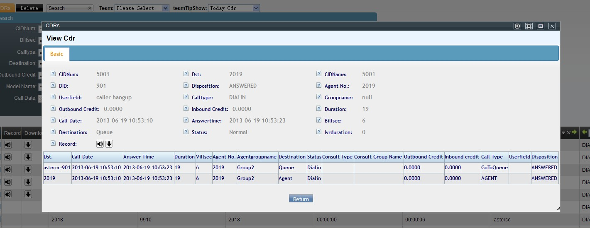
Referencia rápida¶
| Tarea | Dónde configurarlo |
|---|---|
| Extensiones | PBX → Gestión de extensiones |
| Registro de llamadas | PBX → Registro de llamadas |
| Números internos | PBX → Gestión de números internos |
| Troncales / grupos de troncales | PBX → Troncales |
| DID / grupos de DID | PBX avanzado → DID |
| Rutas entrantes / salientes | PBX avanzado → Rutas |
| Grupos de timbrado | PBX → Grupos de timbrado |
| Colas | PBX avanzado → Gestión de colas |
Fuentes¶
raw/en/module_manual/pbx.txtraw/zh/模块使用说明/pbx管理/分机管理.txtraw/zh/模块使用说明/pbx管理/内线管理.txtraw/zh/模块使用说明/pbx管理/中继.txtraw/zh/模块使用说明/pbx管理/添加中继.txtraw/zh/模块使用说明/pbx管理/did.txtraw/zh/模块使用说明/pbx管理/did分组.txtraw/zh/模块使用说明/pbx管理/振铃组.txtraw/zh/模块使用说明/pbx管理/振铃组分机.txtraw/zh/模块使用说明/pbx管理/呼叫记录.txtraw/zh/模块使用说明/pbx管理/语音邮箱.txtraw/zh/模块使用说明/pbx高级管理/中继组.txtraw/zh/模块使用说明/pbx高级管理/拨入路由.txtraw/zh/模块使用说明/pbx高级管理/拨出路由.txtraw/zh/模块使用说明/pbx高级管理/队列管理.txtraw/zh/模块使用说明/pbx管理.txtraw/zh/模块使用说明/pbx高级管理.txtraw/en/module_manual/pbx/adding_trunk.txtraw/en/module_manual/pbx/device.txtraw/en/module_manual/pbx/did.txtraw/en/module_manual/pbx/didgroup.txtraw/en/module_manual/pbx/extension.txtraw/en/module_manual/pbx/pbxcdr.txtraw/en/module_manual/pbx/ringgroup.txtraw/en/module_manual/pbx/ringgroup_device.txtraw/en/module_manual/pbx/trunk.txtraw/en/module_manual/pbx/voicemail.txtraw/en/module_manual/advanced/trunkgroup.txtraw/en/module_manual/advanced/queue.txtraw/en/module_manual/advanced/iroute.txtraw/en/module_manual/advanced/oroute.txtraw/en/questions_and_answers/how_to_setup_recording.txt